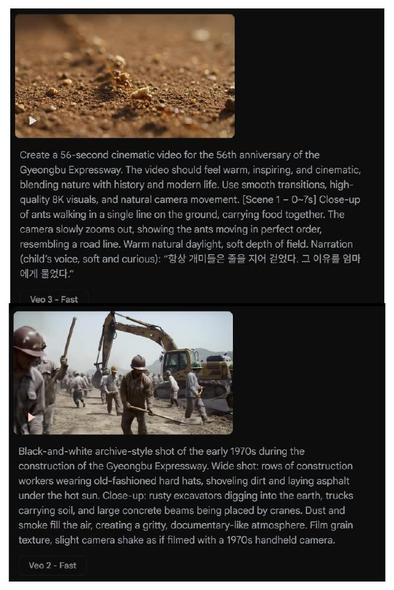
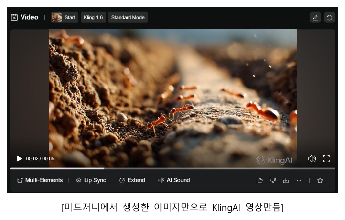
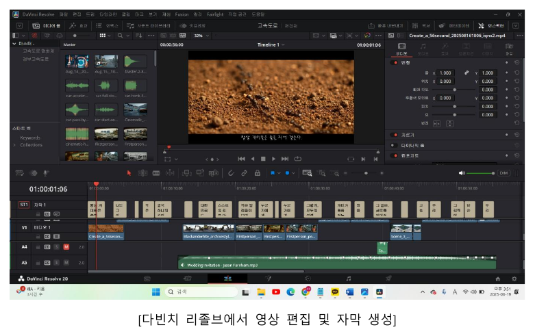
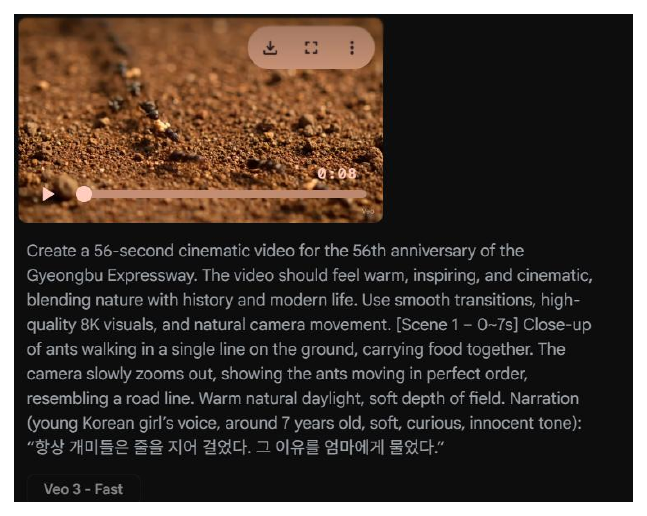

Pipeline
각 도구가 잘하는 영역이 다르다는 걸 작업 중간에 깨달았습니다
Kling AI는 기존 이미지를 자연스럽게 움직이는 데 강하고, Veo3는 텍스트만으로 새 장면(드론샷)을 만드는 데 낫습니다. 이걸 사전에 정하지 않고 즉흥적으로 섞어 쓰면 장면마다 화풍이 어긋난다는 걸 초반에 경험하고, 이후부터는 어떤 장면을 어떤 도구로 만들지 역할을 미리 정했습니다. 서로 다른 도구에서 나온 클립의 색 톤 차이는 다빈치 리졸브 컬러 그레이딩으로 통일했고, 흑백 장면은 컬러로 생성한 뒤 탈색했습니다. draw.io로 주제와 파이프라인을 먼저 구조화하고, GPT로 한글 간판 같은 세부 요소를 만들었습니다.
01
GPT-4
"56주년" → 개미 메타포, 스토리보드·프롬프트
02
미드저니
개미 클로즈업, 56년 전 건설 현장
03
Kling · Veo3
이미지→움직임 / 텍스트→드론샷, 장면별 역할 지정
04
다빈치 리졸브
편집·자막·흑백→컬러, 컬러 그레이딩
05
수퍼톤 · AI 음악
여자아이 독백 내레이션, 민요풍 음악





재사용과 배운 점 — 검증한 파이프라인을 그대로 써서 코레일 미래내일 일경험(2025.10~12) 철도건널목 사고 예방 캠페인 영상을 같은 구조로 제작해 SNS에 배포했습니다. 처음 해보는 영역이라 "완벽한 계획을 먼저"보다 "빨리 만들어보고 어색한 지점을 그때그때 고치자"로 접근했는데, 도구별 역할 분담 원칙도 미리 세운 게 아니라 초반 시행착오에서 얻었습니다.